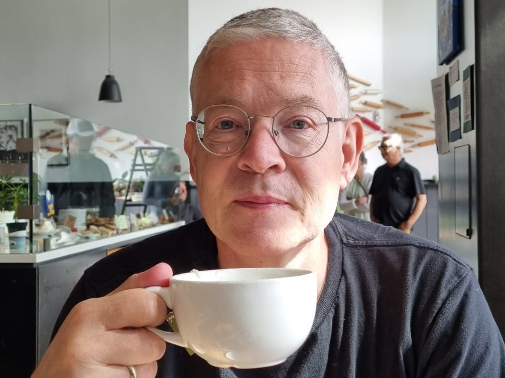

IK HELP KLANTEN OM
il klanten helpen om kosten en ergernis te verminderen → en een goed draaiende IT omgeving achter te laten, zodat heel het bedrijf kan floreren. Door sofware en infra kwaliteit te verbeteren. Zet zich al decennia in om van IT een omzet genererende asset te maken in plaats van een kostenpost.

Core Values
De kwaliteit van de meeste software vandaag de dag is op een aantal punten erg slecht. Één van die punten is IT performance, in gewone mensen taal komt efficiëntie het dichts in de buurt. Door inefficiëntie moeten mensen veel langer wachten dan nodig op allerlei applicaties, websites e.d. Digitalisering hindert mensen vaker dan dat het ze helpt, dat wordt ook door onderzoek onderbouwd.
"Ur serum elendit aectiorecea pro endae poreper uptatus modi ut debit, qui dolupiciur, quost maio eum ut enimusdam, sitat est, omnihil iquae. Itam volorio. Iciis ipsaper ferepe volorepro consed"
" Aenean at lacus nec odio condimentum egestas. Pellentesque et pellentesque orci. Donec in commodo sapien. Donec id ante odio. "
" Vestibulum accumsan viverra facilisis. Sed at euismod elit, eu convallis felis. Pellentesque pretium tellus non nisl placerat posuere. "
Werk
Door mijn verblijf in de VS heb ik op mijn 13e al kennis kunnen maken met computers. Op een teletype (dat is een printer met een toetsenbord er aan, beeldschermen hadden we nog niet) via een modem verbinding maken met een Dec PDP 8. Met 30 mensen op 4KB geheugen en je programma’s opslaan op een paper tape omdat disk opslag veel te duur was om door leerlingen te laten gebruiken. Van daaraf ben ik programmeerbare rekenmachines gaan gebruiken, een Ti-57 onder andere.
Op mijn middelbare school was 1 computer die in Basic geprogrammeerd werd. Je kon per leerling 1 floppy disk kopen voor iet van 25 gulden en daar moest je alles mee doen. Tijd op de computer moest je ruim van tevoren reserveren en dan mocht je een uurtje.
Na een mislukt uitstapje naar technische natuurkunde in Delft ben ik gaan werken in de datacommunicatie. Tegelijk ben ik een avond HTS opleiding Technische Computer Kunde (TCK) gaan volgen. Voor die opleiding ben ik met lof geslaagd, als 3e van mijn jaar. Na de datacommunicatie heb ik diverse IT banen gehad waarbij 3 dingen steeds terugkwamen, inrichten van omgevingen, programmeren en efficiëntie.
In 1999 heb ik de overstap gemaakt naar een werkgever die gespecialiseerd was in IT performance. Dat soort werkzaamheden ben ik blijven doen tot ik in 2009 in Zweden op de camping bedacht dat het vakgebied echt anders aangepakt moest worden om klanten echt te kunnen helpen. Dat werd Sciante.
Sciante
In 2009 kwam ik tot de conclusie dat er 3 dingen fundamenteel mis waren met IT performance: Er werd redelijk houtje touwtje gemeten, met een lage datakwaliteit en te weinig inzicht als gevolg; Er waren mooie dashboards, maar weinig ondersteuning om root causes te vinden; Het vakgebied was te veel gericht op techniek, en te weinig op problemen in de echte wereld. Om dat te verbeteren is in 2010 Sciante opgericht. Binnen Sciante is een betere oplossing bedacht en gebouwd. Daar is in 2010 en 2011 pilot mee gedraaid bij verschillende klanten.
IN 2011 VOLGDE DE EERSTE PRODUCTIE KLANT.
Daar was een data warehouse dat om 9:00 klaar moest zijn, maar op een goede dag was dat pas om 11:00. 1700 mensen konden uren hun werk niet doen. Iedereen en zijn oma had er al naar gekeken en niemand snapte het. 15 minuten nadat we begonnen te meten hadden we het probleem en de oplossing duidelijk. Een beter bewijs dat onze aanpak een structurele verbetering bracht konden we ons niet wensen.Contacts
- +(057) 123456 Call us
- yourmail@gmail.com Write us
- Amphitheatre Parkway, PA 94043 Locate us on map